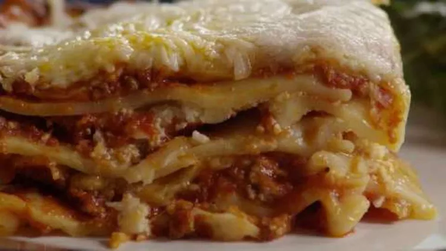

Lasagna

Linda's Lasagna
Description
This is my mother's wonderful lasagna recipe. It has been a favorite in our family for years!
Prep time: 45 minutes
Cook time: 1 hr 45 minutes
Total time: 2 hr 30 minutes
Servings: 8
Yield: 1 - 9x13 inch lasagna
Ingredients
- 1 pound lean ground beef
- 1 onion, chopped
- 2 (6 ounce) cans tomato paste
- 1 (14.5 ounce) can crushed tomatoes
- 2 cups water
- 1 tablespoon dried oregano
- 2 teaspoons garlic powder
- 2 teaspoons salt
- 0.25 teaspoon ground black pepper
- 1 tablespoon white sugar
- 12 ounces cottage cheese
- 0.5 cup grated Parmesan cheese
- 1 egg
- 9 lasagna noodles
- 1 pound shredded mozzarella cheese
Steps
- In a large pot over medium heat, cook beef until brown. Drain off all fat. Add onion and cook until translucent. Add tomato paste, crushed tomatoes, water, oregano, garlic powder, salt, pepper, and sugar. Stir until combined and cook over medium heat until boiling. Reduce heat to low and simmer for 1 hour.
- While sauce is simmering, blend cottage cheese, Parmesan cheese, and egg until smooth. Set aside.
- Bring a large pot of lightly salted water to a boil. Add pasta and cook for 8 to 10 minutes or until al dente; drain.
- Preheat oven to 350 degrees F (175 degrees C).
- Spread 1 cup of sauce in the bottom of a 9x13-inch baking dish. Cover sauce with 3 noodles. Cover noodles with 1/3 of the remaining sauce. Top with 1/2 of the mozzarella. Place another layer of noodles and one of sauce over the mozzarella; top that with the cottage cheese mixture. Top with remaining 3 noodles and remaining sauce.
- Bake in preheated oven 30 minutes. Sprinkle remaining mozzarella on top and bake 15 minutes more, until golden and bubbly.
Return to home
Return to top